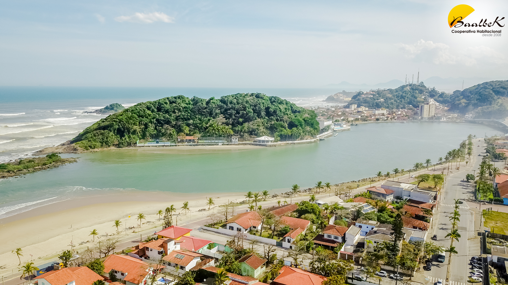

História de Itanhaém
A origem de Itanhaém está cercada de controvérsias históricas, embora oficialmente seja considerada a data de 22 de abril de 1532 como de sua fundação, associada à figura de Martim Afonso de Souza. Uma segunda vertente atribui ao castelhano João Rodrigues e ao português Antônio Soares, que chegaram à região por volta de 1549, a responsabilidade pela fundação da cidade.
É irrefutável, porém, o envolvimento de Martim Afonso no processo de sua formação histórica. Coube-lhe a escolha do local onde se estabeleceria a povoação e a capela em louvor à Imaculada Conceição, área anteriormente povoada por colonos e índios pertencentes à tribo Itanhaém.
Missionários da Companhia de Jesus, entre eles os padres José de Anchieta e Manoel da Nóbrega, assumiram o trabalho de catequização desses indígenas, construindo uma igreja e um colégio ao norte do Rio Itanhaém, marcos iniciais da aldeia e da feitoria.

Cabeça de Capitania e Convento Franciscano
Não tardou para que fosse transformada em vila, por provisão de 1561. No século XVII, Itanhaém ganhou importância política no quadro da ocupação do território colonial, tornando-se, a partir de 1624, cabeça de Capitania.
Ao adquirir essa posição, passou a ter uma jurisdição bastante abrangente que compreendia desde Cabo Frio ao norte, até Paranaguá ao sul, bem como vilas do Vale do Paraíba e de Minas Gerais. Nesse período, contou com a presença de padres franciscanos que construíram um convento, um dos principais de sua Ordem no Brasil.
Elevada a sede de município por meio de Carta Régia em 1700, a cidade obteve sua denominação atual em 6 de novembro de 1906.